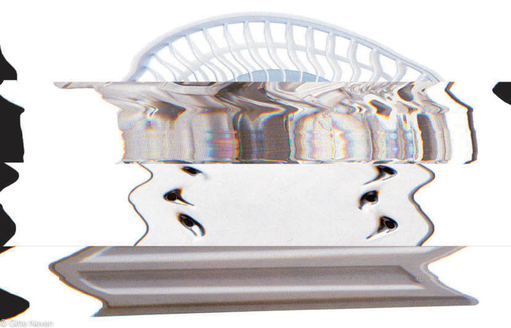
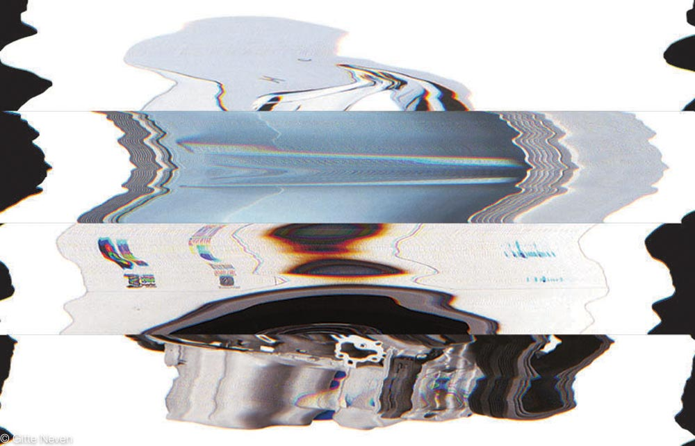
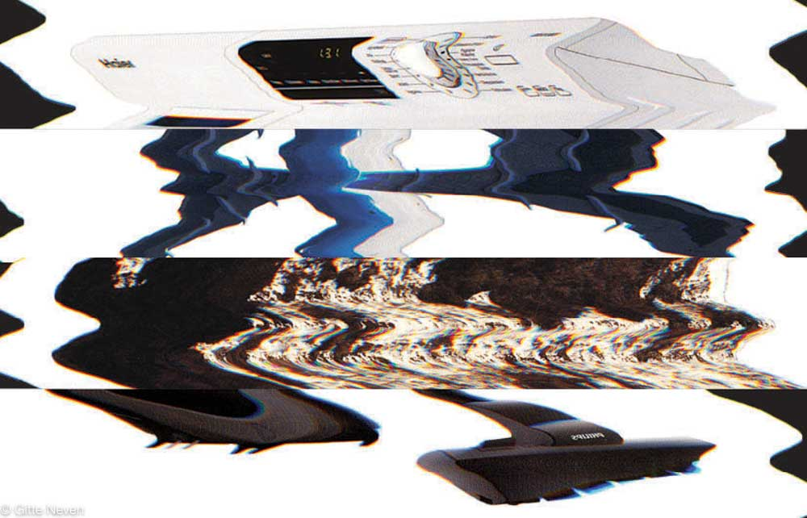
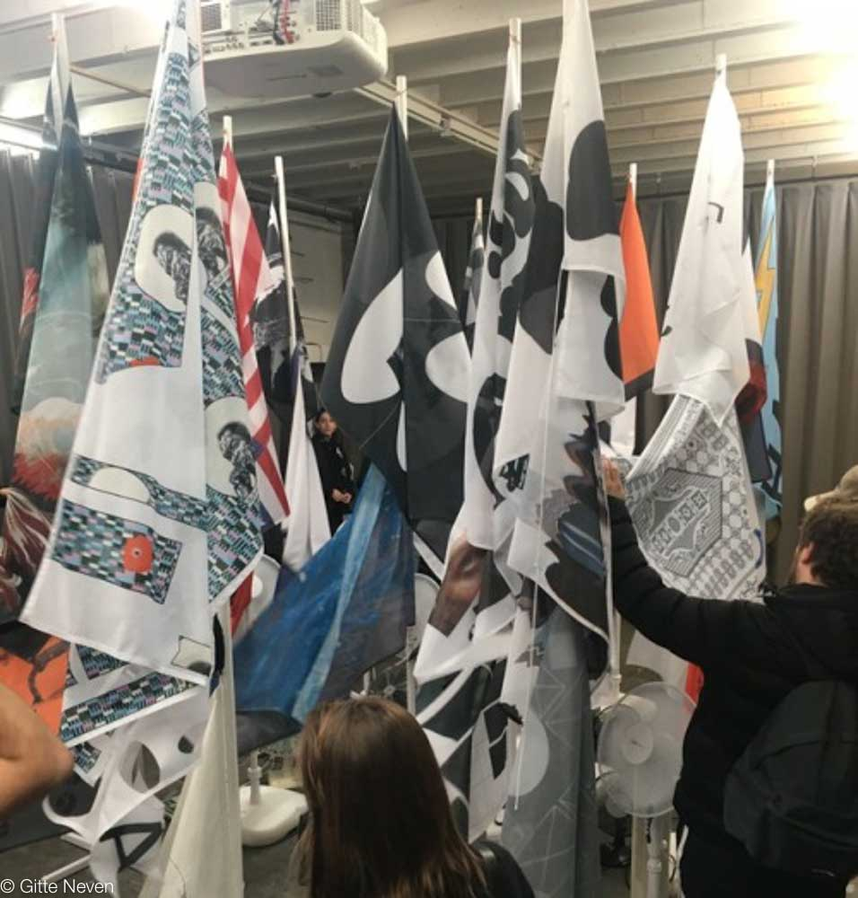

(RADIO) is a ficitonal pirate radio. It only plays white noise, like the noise of a fan or an iron. There will be people who like the noise and people who don't. The identity is meant to show that these machines all have something in common in there sound. Thats why I tried to make these machines less recognisable.



Each person of the class created their own radio with their own identity. We showed these in an exhibition at school called S.H.O.T.S with an S. We organized the 78 exhibition their to let the other students see our works. All the flags where put in the middle with tons of fans surrounding it. And while you see the wild flags go, you here a 'song' of each radio.
